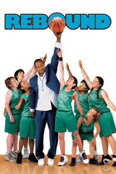

Rebound (2005)


A comedy where old school ...meets middle school

País:Estados Unidos, 86 minutos.
Idiomas:Inglés, Italiano
GénerosComedia, Familiar
Director/es:Steve Carr
Guionistas:William Wolff, Jon Lucas, John J. Strauss, Scott Moore, Ed Decter
Códec de vídeo:Unknown
Número: 3576
TomatoMeter:

--

--
Clasificación IMDb:


5.2/10 (13.9K votos)
Certificación:
Argumento:
An acclaimed college hoops coach is demoted to a junior varsity team after a public meltdown.
Reparto
Martin Lawrence (Como Roy McCormick), Wendy Raquel Robinson (Como Jeanie Ellis), Breckin Meyer (Como Tim Fink), Horatio Sanz (Como Mr. Newirth), Patrick Warburton (Como Larry Burgess Sr.)
Medio: Archivo de video,
Localización: D:\PELICULAS\ACTORES\Martin Lawrence\Rebote(Rebound) (2005)\Rebound.avi
Prestado: No
Rel. aspecto: Unknown